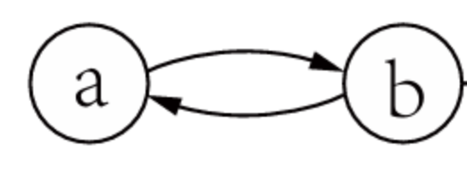
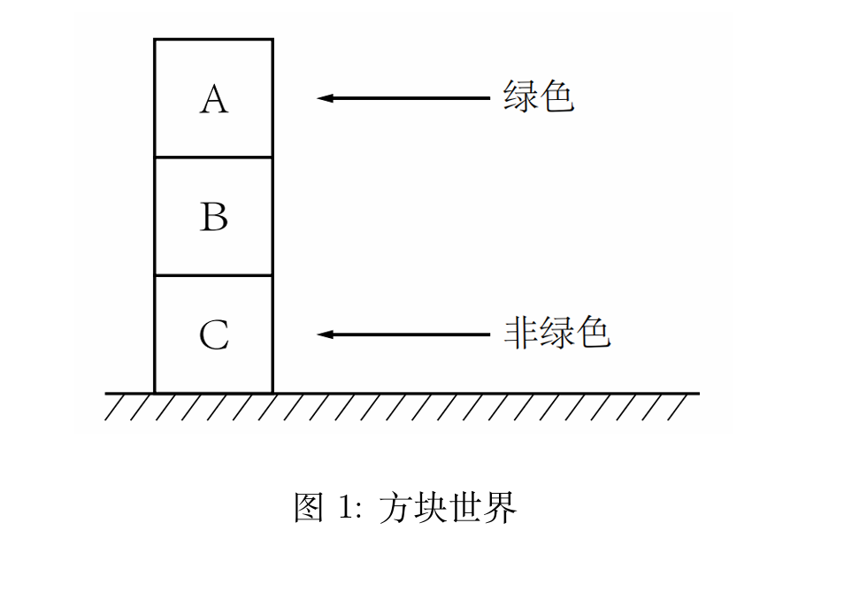

第 1 章 推理与论证¶
本章概要¶
- 人工智能与逻辑：AI 实现途径包括 符号主义（符号表示+逻辑推理，可解释性好）与 亚符号主义（统计/数据驱动，如神经网络、大模型）；二者互补。知识的表示与推理是实现高水平 AI 的核心之一，逻辑学是知识表示与推理的基础。
- 核心概念：推理 = 从前提得到结论；论证 = 前提 + 结论 + 推理关系。
- 推理的三种日常情形：① 从已有知识推出新知识（演绎）；② 从案例归纳出新知识（归纳）；③ 从观察现象寻求最佳解释（溯因）。对应三种基本类型：演绎（含单调与非单调）、归纳、溯因。
- 两条主线：① 各类推理形式的定义与特点；② 人工智能逻辑中的表示与推理（经典逻辑、非单调逻辑、归纳与因果等）。
1. 常见的推理类型¶
1.1 演绎推理与非单调推理¶
1.1.1 演绎推理¶
定义：演绎推理是一种 保真 的推理——若前提为真，则结论 必然 为真。
- 有效论证：一个演绎论证是 有效的 ⟺ 前提为真时，结论必然为真；否则称为 谬误。有效性取决于命题形式，与各命题的具体真假无关。
- 教材例题——豆子/袋子（演绎）：来自这个袋子的豆子都是白色的；这些豆子来自这个袋子；因此，这些豆子是白色的。（大前提=一般原理，小前提=特殊事例。）
- 三段论形式（可直接用作“演绎推理例子”）：
- 所有 M 都是 P
- 所有 S 都是 M
- 因此，所有 S 是 P
- 单调性：演绎推理具有单调性——原有结论不会因新信息的加入而失效。
1.1.2 非单调推理¶
当信息 不确定、不完备或不一致 时，经典演绎无法直接给出可靠结论，需要非单调推理：
| 情形 | 含义说明 |
|---|---|
| 不确定性 | 缺少准确知识，无法得到完全可靠的结论 |
| 不完备性 | 部分信息缺失（如牌局中不知道对手的牌） |
| 不一致性 | 存在互相矛盾的命题 |
教材例题——鸟会飞/Tweety：前提“鸟会飞”“Tweety 是鸟”无法得到有效演绎结论——因为“鸟会飞”知识不完备（未包含不会飞的鸟）、不确定。若改成“所有鸟都会飞”则改变原意；若改成“有些鸟会飞”则推理形式无效。因此需要非单调推理。
两种常见实现方式：
- 正常性假设：在演绎中加入“默认正常”的假设，结论可被新信息推翻。例：“鸟会飞，除非可证它不正常；Tweety 是鸟 ⇒ Tweety 会飞。”若新信息“Tweety 是企鹅”则结论被推翻。
- 可废止规则：形如“典型地，若 A 则 B”——一般情况下 A→B 成立，但 B 可被新信息/反面证据推翻；常用来表示 常识。例：“典型地，若 X 是鸟则 X 会飞”；有“Tweety 是企鹅”“企鹅不会飞”时，原结论“Tweety 会飞”被推翻。（考点：可废止规则的核心特点 = 结论可能被新信息推翻，单选题选 B。）
非单调推理：结论可能随着新信息的加入而被 推翻 的推理。基于假设的演绎、可废止推理都属于非单调推理。
可废止推理 vs 正常性假设（辨析）
| 维度 | 可废止推理 | 正常性假设 |
|---|---|---|
| 知识表示 | 规则带可废止标记（“典型地，A 则 B”） | 严格蕴含 + 异常谓词（A∧¬Abnormal → B） |
| 例外处理 | 结论可被反面证据直接推翻 | 通过判断 Abnormal 是否成立来阻断结论 |
| 默认的载体 | 默认是规则本身的性质 | 默认是“个体正常”的假设 |
| 推理机制 | 规则直接支持可废止推导 | 需极小化异常谓词或默认个体正常 |
| 逻辑形式 | 可废止逻辑（如 defeasible logic） | circumscription、缺省逻辑（default logic） |
| 直观理解 | 规则“有例外”，结论暂时接受 | 规则全称，个体是否正常需默认 |
典型应用：常识推理（如“鸟会飞”）、规范推理（法律、道德伦理中的可废止规则）。
1.2 归纳推理与溯因推理¶
归纳推理¶
- 广义：一切不能保真的推理（即非演绎）。
- 狭义（本书采用）：从 特定事例的观察 推断出 一般规律 的过程；用 归纳强度 刻画论证好坏。
- 归纳例子：这些豆子来自这个袋子且是白色的 ⇒ 来自这个袋子的豆子都是白色的。或：观察到多只天鹅均为白色 ⇒ 所有天鹅都是白色的。
[!NOTE] 基于假设的演绎也不能保真，但在分类上通常归入非单调演绎，而不算狭义的“归纳”。
溯因推理¶
- 定义：从观察到的 现象 出发，推断能 最好解释 该现象的原因或假说。
- 直观：由果推因，选“最佳解释”。教材例：来自这个袋子的豆子都是白色的；这些豆子是白色的 ⇒ 因此这些豆子来自这个袋子。形式：若 p 则 q，q 成立 ⇒ 推测 p 成立。
1.3 关于论证的推理¶
- 通过 构造、比较与评估 论证，来确定某个论证的 可接受性；对象是 论证本身（元层面）。
- 教材例题——两小儿辩日：两小儿各提出论证（A1 日初近/日中远，A2 日初远/日中近），并用 A3、A4 相互支持己方、反驳对方。论证之间的反驳关系：若接受一论证则须拒绝被其反驳的论证；可接受性不仅看前提与推理，还看与其他论证的冲突关系。论证图：节点=论证，边=攻击/反驳。
2. 人工智能逻辑主要研究方向¶
2.1 基于演绎推理的逻辑¶
经典一阶逻辑的局限性（为何需要非单调逻辑）
- 不完备知识：例——“转动点火钥匙，发动机启动”依赖“油缸有油”“排气管未堵”等未给出的条件，存在例外，一阶逻辑难以合理表达。
- 不一致知识：例——规范1“用药时间到则应给药”、规范2“病人正忙则不应给药”；两条件同时满足则结论矛盾。经典逻辑中从矛盾可推出任意命题，系统会“坍塌”，需非单调或论辩框架处理。
| 类型 | 适用场景 | 代表内容 |
|---|---|---|
| 经典演绎逻辑 | 确定、完备、一致的知识 | 命题逻辑、一阶逻辑、描述逻辑 |
| 非单调逻辑 | 有例外、缺省、可废止的知识 | 缺省逻辑、回答集编程、可废止逻辑、论辩系统 |
| 知识与信念的逻辑 | 涉及心智状态（信念、愿望等） | 各种模态逻辑 |
- 扩展方式：路径一 正常性假设/缺省规则 → 缺省逻辑、回答集编程；路径二 可废止规则 → 可废止逻辑、论辩系统。
2.2 归纳、不确定性与因果推断¶
| 方向 | 核心问题 | 典型方法/模型 |
|---|---|---|
| 归纳逻辑编程 | 从案例自动学习一般规则 | 给定背景知识+案例，学出逻辑程序（覆盖正例、不覆盖反例） |
| 不确定推理 | 在不确定性下进行推理 | 客观概率；主观概率（贝叶斯网络、信念网络、证据理论）；模糊度 |
| 因果推断 | 从观测中找原因，由果溯因 | 结构因果模型、因果图 |
2.3 基于论证的逻辑¶
- 在论证层次上，依据论证之间的冲突关系与支持关系评估可接受性。
- 形式论辩理论：抽象论辩（从冲突论证中选可接受子集）、结构化论辩（从知识构建论证并定义冲突/击败关系）、基于论证的对话（协议与策略）。
2.4 实现与工具¶
- 逻辑系统的实现 = 推理引擎/求解器：SAT 求解器、回答集编程求解器、归纳逻辑编程求解器、自动推理工具等。
3. 知识的表示与推理¶
一般规律：逻辑语言的表达能力越强，对应推理系统的 计算复杂性 往往越高。
3.1 知识表示语言¶
- 知识与信念：知识 = 知道者与命题的关系，且需真实反映世界；信念则不必为真。
- 知识类型：过程性知识 vs 陈述性知识。
- 表示方式：由初始符号与语法规则组成；知识可表示为符合语法的符号串（公式）。例：符号集 {p,q,r,¬,∧}，规则“若 φ,ψ 是公式则 (¬φ)、(φ∧ψ) 是公式”可生成 (¬p)、¬(p∧q) 等。
3.2 符号语言的语义¶
- 论证由 结论 与 支持该结论的理由 构成。
- 不同论证的结论可能 矛盾；这种矛盾关系常被抽象为论证之间的 攻击关系。当一个论证的结论与另一个论证的结论发生矛盾时，称这两个论证相互 反驳（rebut）。
- 教材例题——尼克松/教友会/共和党：论证 α“教友会的人和平主义，尼克松是教友会 ⇒ 尼克松和平主义”；论证 β“共和党非和平主义，尼克松是共和党 ⇒ 尼克松非和平主义”。两结论矛盾，故 α 与 β 相互攻击/反驳；可表示为有向图（节点=论证，边=攻击）。

3.3 推理¶
3.3.1 知识级推理¶
- 经典演绎：前提与结论满足 语义蕴涵 时，前提为真 ⇒ 结论必然为真。
例：¬(p∧q), p ⊨ ¬q（⊨ 表示逻辑蕴涵）。 - 基于论证的推理：从 论证图 到 可接受论证集合 的映射（多种语义）：
- 例如：不接受“自我防御”的论证 → σ₁(G₁)=∅；接受自我防御 → σ₂(G₁)={{α},{β}}。
- 可防御：集合 X 可防御论证 x ⟺ 对每个攻击 x 的 y，X 中都有攻击 y 的论证；若 x 被自己所在的集合防御，则称 x 自我防御。
3.3.2 符号级推理¶
- 推理可看作符号操纵：从一组公式得到新公式，不涉及语义解释。肯定前件式（MP 规则）：φ→ψ, φ ⊢ ψ（⊢ = 形式可推演）。例：前提 p→¬q 与 p，可形式推出 ¬q。
3.3.3 推理系统的特性¶
- 完全性：若 Γ 在语义上蕴涵 φ，则从 Γ 可形式推出 φ。
- 可靠性：若从 Γ 可形式推出 φ，则 Γ 在语义上蕴涵 φ。两者共同保证“语义蕴涵”与“形式推演”一致。表达能力与计算复杂性往往矛盾：语言越强，复杂度越高。
典例¶
- 设定：三块叠放，顶块绿色、中间颜色未知、底块非绿色。判断是否存在“一个绿色方块在一个非绿色方块之上”。

- 所需知识：个体 A（顶）、B（中）、C（底）；谓词 Green(x)、On(x,y)；已知 Green(A)，¬Green(C)，On(A,B)，On(B,C)；B 颜色未知。
- 推理：目标 ∃x∃y(Green(x) ∧ ¬Green(y) ∧ On(x,y))。若 B 非绿则 (A,B) 满足；若 B 绿则 (B,C) 满足。故无论 B 是否绿色，结论都成立。